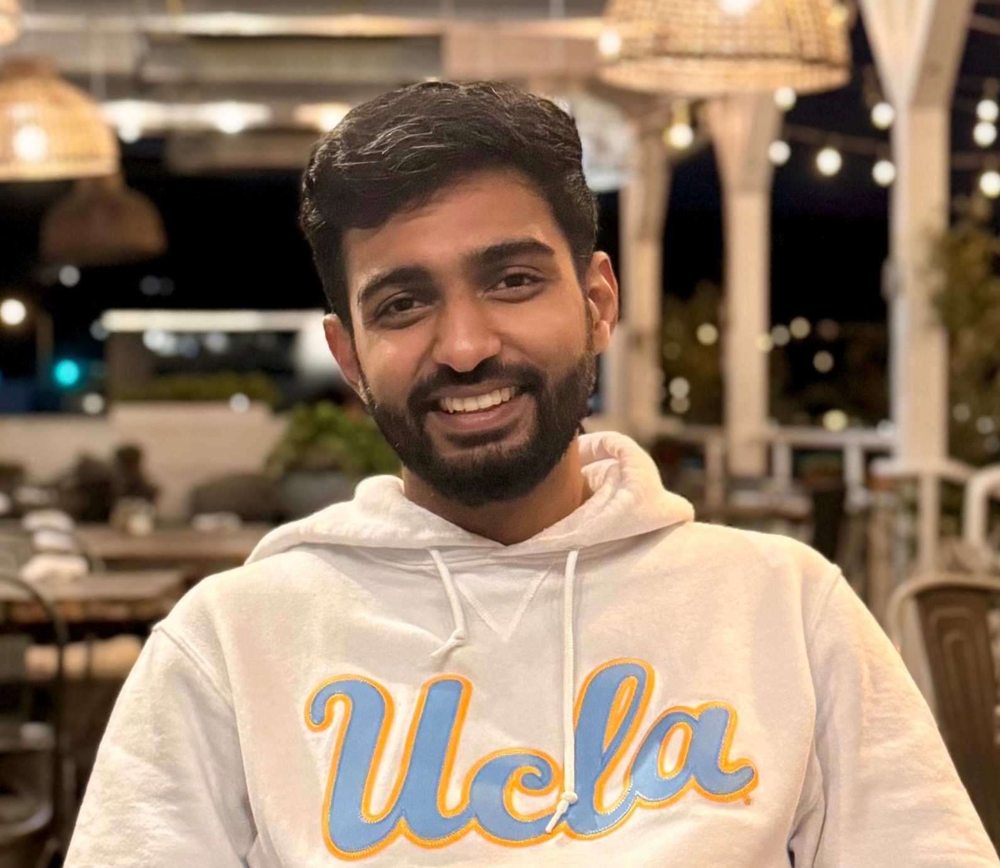

<div class="row flex-column-reverse flex-md-row py-2">
    <div class="col-md-8" id="bio">
        <h1>Siddhant Kharbanda</h1>
        <p>
            I am a masters student and graduate student researcher at University of California, Los Angeles (UCLA) working with <a href = "https://web.cs.ucla.edu/~chohsieh/">Prof. Cho-Jui Hsieh</a> on effective Dual Encoder algorithms for Search and Recommendation. I aim at bridging the gap between Extreme Multilabel Classification and Dense Retrieval algorithms. I received my bachelors degree in Computer Science from BITS Pilani, India and pursued my bachelors thesis at Aalto University, Finland, working with <a href = "https://sites.google.com/site/rohitbabbar/Home?pli=1">Prof. Rohit Babbar</a>.
        </p>
        <p>
            Previously, I was working as an Applied Scientist in Microsoft's Bing Text Ads team. My time at Microsoft was dedicated to developing scalable multi-lingual dual encoder models and training them over billions of query keyword pairs. More recently, my research focus has switched to exploring multi-lingual supervised fine-tuning of large language models aimed at better Retrieval Augmented Generation (RAG). My goal is to develop efficient multi-lingual conversational search and recommendation solutions to provide users with more accurate summarized search results. 
        </p>
        <p>
            More broadly, I am also interested in multi-modal machine learning and have worked with <a href = "https://vcg.seas.harvard.edu/people/hanspeter-pfister">Prof. Hanspeter Pfister</a> and <a href = "https://donglaiw.github.io">Dr. Donglai Wei</a> at Harvard University on Video Instance Segmentation. 
        </p>
        <p style="text-align:center">
<!--             <a target="_blank" href="https://mailhide.io/">Email</a> &nbsp;/&nbsp; -->
            <a href="mailto: siddhantkharbanda99@gmail.com">Email</a> &nbsp;/&nbsp;
            <a href="https://drive.google.com/file/d/1OgC8rtLQ36pZKSxHixYmjY2VzlTTqM77/view?usp=sharing">CV</a> &nbsp;/&nbsp;
            <a href="https://github.com/the-catalyst">GitHub</a> &nbsp;/&nbsp;
<!--             <a href="https://twitter.com/">Twitter</a> &nbsp;/&nbsp; -->
<!--             <a href="https://scholar.google.com/citations?user=">Google Scholar</a> &nbsp;/&nbsp; -->
            <a href="https://www.linkedin.com/in/sid-kharbanda">LinkedIn </a>
        </p>
        <h2>Timeline</h2>
        <p>
            <ul>[Jan 2024] Started working as a Graduate Student Researcher at UCLA.</ul>
            <ul>[Sep 2023] Started MS CS at UCLA.</ul>
            <ul>[Jul 2023] Second-authored paper accepted at <strong>ICCV'23</strong>.</ul>
            <ul>[Feb 2023] First-authored paper accepted at <strong>SIGIR'23</strong>.</ul>
            <ul>[Oct 2022] Joined <strong>Microsoft, India</strong> as an <strong>Applied Scientist</strong> in Bing Text Ads team.</ul>
            <ul>[Sep 2022] First-authored paper accepted at <strong>NIPS'22</strong>.</ul>
            <ul>[Mar 2022] First-authored paper accepted at <strong>CVPR'22</strong>.</ul>
            <ul>[Aug 2021] Joined <strong>Elisa, Finland</strong> as an <strong>NLP Research Engineer</strong>.</ul>
            <ul>[Jan 2021] Started bachelors thesis at <strong>Aalto University, Finland</strong>.</ul>
            <ul>[Aug 2020] Joined <strong>Visual Computing Group, Harvard University</strong> as an undergrad student researcher</ul>
        </p>
    </div>
    <div class="col-md-4" style="z-index:4;">
        
    </div>
</div>

{% include publications.html %}
